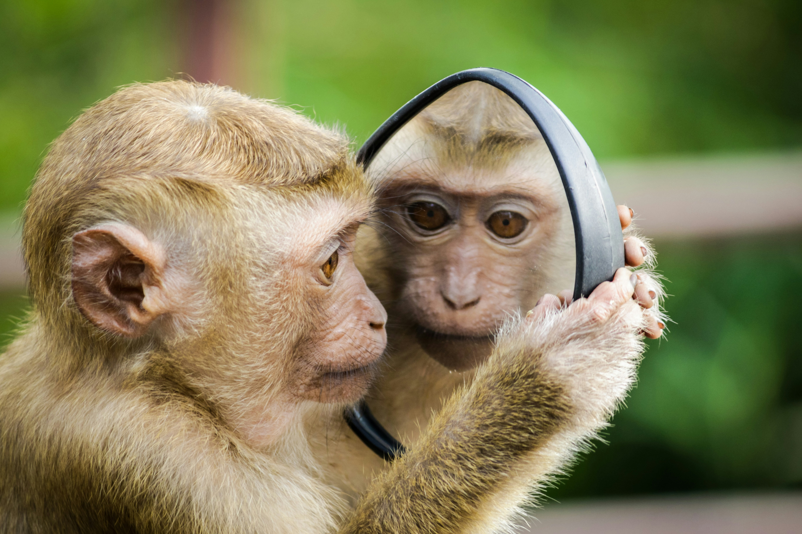

Welcome to Wild Haven Animal Park!

Welcome to Wild Haven Animal Park, where adventure and conservation come together! Nestled in the heart of nature, our park is home to a diverse array of animals from around the globe. Whether you are here to observe majestic wildlife, learn about their habitats, or participate in our interactive programs, Wild Haven offers an unforgettable experience for visitors of all ages. Join us in our mission to inspire a love for animals and promote environmental stewardship!
 ,
,
Welcome to Wild Haven Animal Park!
At Wild Haven, we believe in the power of education and conservation. Our park spans over 150 acres of beautifully landscaped habitats, each designed to mimic the natural environments of our resident animals. From the lush savannas of Africa to the vibrant rainforests of South America, our carefully curated exhibits provide visitors with an immersive experience that highlights the beauty and diversity of wildlife.
Our Mission
Our mission is to inspire a deep appreciation for wildlife and the natural world while promoting conservation efforts both locally and globally. We aim to educate visitors about the challenges many species face and encourage responsible stewardship of our planet.
Our History
Wild Haven Animal Park was founded in 1995 by wildlife enthusiasts and conservationists who shared a common goal: to create a sanctuary that educates the public about wildlife while promoting conservation efforts. Starting with just a handful of rescued animals, the park quickly grew in both size and reputation. Over the years, we have expanded our collection to include over 200 species from various habitats around the world.
In 2005, Wild Haven received accreditation from the Association of Zoos and Aquariums (AZA), a recognition that highlights our commitment to the highest standards of animal care, conservation, and education. Our park has since become a vital hub for wildlife preservation and education in the community, hosting numerous outreach programs and events that engage visitors of all ages.
Notable Features
- Savanna Safari Tour: Hop aboard our guided safari vehicle for an exciting journey through the expansive Savanna exhibit. Encounter giraffes, zebras, antelopes, and other majestic wildlife as they roam freely in their naturalistic habitats. Our knowledgeable guides share fascinating facts about each species and their role in the ecosystem, making this a must-do experience for all ages.
- Watering Hole Observation Deck: Relax on our observation deck overlooking a scenic watering hole, where you can watch elephants, rhinos, and various bird species as they gather to drink and socialize. This prime viewing spot offers excellent photo opportunities and a chance to learn about the importance of water sources in wildlife conservation.
- The Safari Walk: Take a leisurely stroll along our specially designed walking trail, where you will encounter smaller wildlife exhibits and interactive educational displays. Learn about the animals that inhabit different ecosystems and their unique adaptations for survival.
- Animal Feeding Experiences: Participate in our interactive animal feeding sessions, where you can help our keepers feed herbivores like giraffes and zebras. This hands-on experience allows you to learn about their diets and behaviors while enjoying a close encounter with these amazing animals.
- Guided Nature Walks: Join one of our expert guides for an informative nature walk through our park. Discover the flora and fauna of our native landscapes, learn about local wildlife, and understand the importance of preserving these natural habitats.
- Safari Nights: Experience the magic of the animal kingdom after dark with our special Safari Nights. Enjoy guided evening tours, where you’ll have the chance to see nocturnal animals in action and learn about their unique adaptations for nighttime living.
- Conservation Education Station: Throughout your safari, stop by our Conservation Education Station, where you can learn about ongoing conservation projects and initiatives. Discover how our efforts are helping to protect endangered species and preserve their habitats for future generations.
Our Gallery

Safari Timings
| Day | Morning Safari | Afternoon Safari | Evening Safari |
|---|---|---|---|
| Monday | 9:00 AM - 12:00 PM | 1:00 PM - 4:00 PM | 6:00 PM - 8:00 PM |
| Tuesday | 9:00 AM - 12:00 PM | 1:00 PM - 4:00 PM | 6:00 PM - 8:00 PM |
| Wednesday | 9:00 AM - 12:00 PM | 1:00 PM - 4:00 PM | 6:00 PM - 8:00 PM |
| Thursday | 9:00 AM - 12:00 PM | 1:00 PM - 4:00 PM | 6:00 PM - 8:00 PM |
| Friday | 9:00 AM - 12:00 PM | 1:00 PM - 4:00 PM | 6:00 PM - 8:00 PM |
| Saturday | 9:00 AM - 12:00 PM | 1:00 PM - 4:00 PM | 6:00 PM - 8:00 PM |
| Sunday | 9:00 AM - 12:00 PM | 1:00 PM - 4:00 PM | 6:00 PM - 8:00 PM |